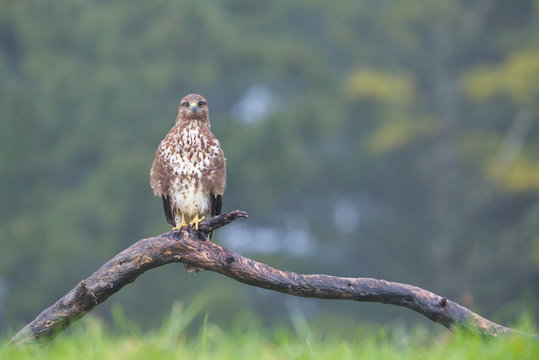
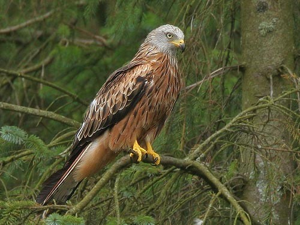
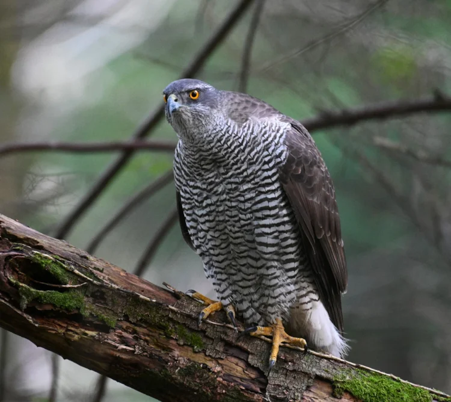
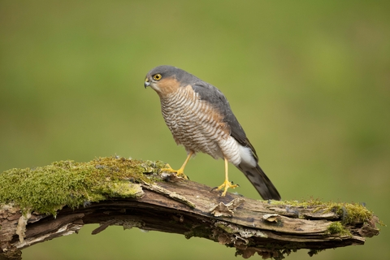

The common buzzard is the uk's most common raptor. Often found soaring above treeless fields, it's broad wings have large finger like feathers that make it recognisable compared to other raptors. They make a call that sounds like a cat meowing, and they can glide without flapping for kilometers.
| Wingspan | Lifespan | Weight | Number of Breeding Pairs |
|---|---|---|---|
| 115cm | 12 years | 0.43-1.4kg | 57,000-79,000 |
The common buzzard is often seen in open treeless fields as it feeds on rabbit and hare. Fairy Glen is quite good.

The red kite is a majestic bird that has an interesting conservation story. They were poisoned and shot by farmers because they mistakenly thought that they were honting their sheep. Afler going extinct, the rspb helped reintroduce them to the uk and now they are one of the most recognised british birds of prey in the uk countryside.
| Wingspan | Lifespan | Weight | Number of breeding Pairs |
|---|---|---|---|
| 175-195cm | 4 years | 800-1,300 grams | 4,400-4,600 |
Red kites were reintroduced to the uk in 1989 in Chiltern Hills, and have stuck around in the area since. They are very common in oxford and Wales, specific reserves being RSPB Carngafallt, Gigrin Farm , and The Chilterns

The Eurasian goshawk a powerful, medium-sized raptor renowned f or its incredible agility while maneuvering through dense woodland canopies. These "phantoms of the forest" possess short, broad wings and a long tail, a physical blueprint designed for exp losive bursts of speed and precise aerial steering. They are highly effective apex predators, util izing a sit-and-wait hunting strategy to ambush a variety of prey ranging from squirrels to large birds like crows.
| Wingspan | Lifespan | Weight | Number of breeding pairs |
|---|---|---|---|
| 135-165cm | 7 years | 0.63-1.4kg | 1,200 |
Goshawks are quite rare bird, but they need forests to hunt for their food. The new forest and forest of dean are the best places, but RSPB Nagshed is arguably a great reserve to.

The Eurasian sparrowhawk is a small, agile bird of prey frequently found i n European gardens and woodlands. It is a specialist at hunting small songbir ds, using its long legs and sharp talons to snatch prey mid-flight. Females are significantly larger than males, a trait known as sexual dimorphism that allows the pair to target different-sized prey. Despite their fierce reputat ion as hunters, they are often recognized by their distinctive barred underparts and yellow eyes.
| Wingspan | Lifespan | Weight | Number of breeding pairs |
|---|---|---|---|
| Males 55-70cm Females 67-80cm | 4 years | Males 110-196 grams Females 185-342 grams | 31,000-35,000 |
Sparrowhawks are extremely common and can be found anywhere in the uk as they are ver widespread, but woodlands and marshes are all exellent, as they hunt small birds, such as starling and goldfinch. Exact reserves are Bowers Marsh and WWT London.